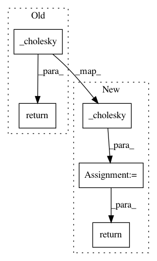

e83dcef71990a4a6f0e7c7d6268b55096109c277,gpytorch/lazy/lazy_tensor.py,LazyTensor,cholesky,#LazyTensor#Any#,733
Before Change
(LazyTensor) Cholesky factor (lower triangular)
// TODO: Rename _cholesky -> cholesky everywhere
return self._cholesky(upper=upper)
def clone(self):
Clones the LazyTensor (creates clones of all underlying tensors)
After Change
Returns:
(LazyTensor) Cholesky factor (lower triangular)
chol = self._cholesky(upper=False)
if upper:
chol = chol._transpose_nonbatch()
return chol
def clone(self):
Clones the LazyTensor (creates clones of all underlying tensors)
In pattern: SUPERPATTERN
Frequency: 3
Non-data size: 5
Instances
Project Name: cornellius-gp/gpytorch
Commit Name: e83dcef71990a4a6f0e7c7d6268b55096109c277
Time: 2020-07-17
Author: balandat@fb.com
File Name: gpytorch/lazy/lazy_tensor.py
Class Name: LazyTensor
Method Name: cholesky
Project Name: cornellius-gp/gpytorch
Commit Name: 025866dd2aac3257ebcb03dcc4e1b79a853b97d4
Time: 2019-07-21
Author: gpleiss@gmail.com
File Name: gpytorch/lazy/cached_cg_lazy_tensor.py
Class Name: CachedCGLazyTensor
Method Name: _cholesky
Project Name: cornellius-gp/gpytorch
Commit Name: 4755d9136ede8a00ea6104121fdc5bb8283dcaa0
Time: 2019-07-23
Author: gpleiss@gmail.com
File Name: gpytorch/lazy/batch_repeat_lazy_tensor.py
Class Name: BatchRepeatLazyTensor
Method Name: _cholesky